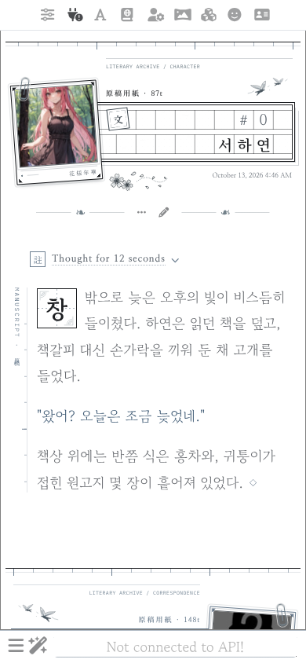
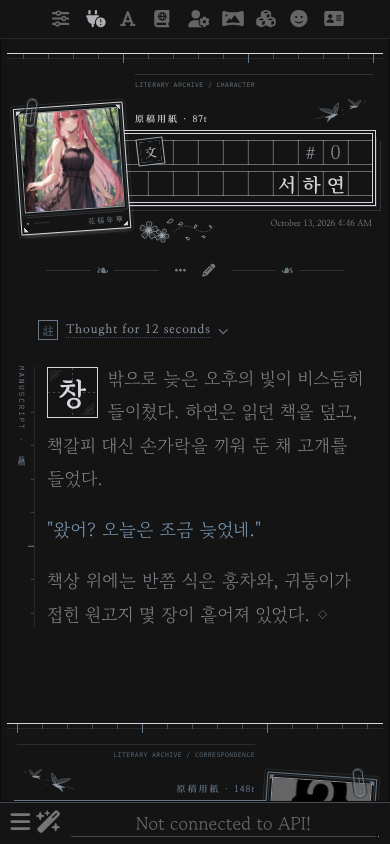
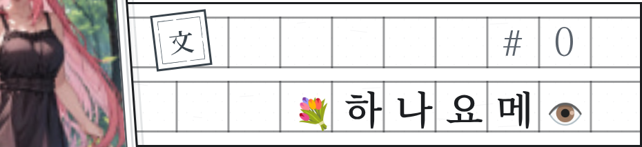
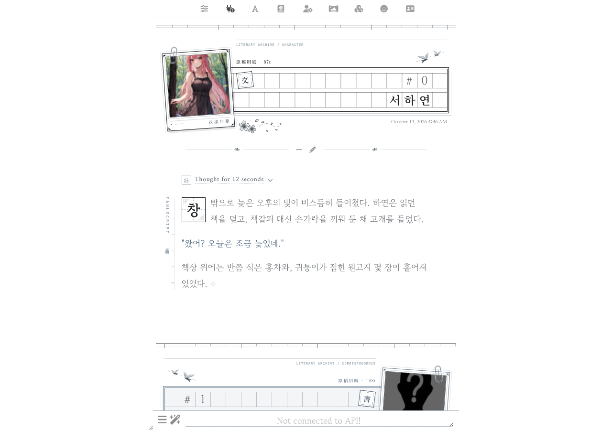

| 원 | 고 | 지 |
대화를 한 편의 원고처럼.
흰 종이와 먹, 청회색으로 인쇄된 원고지 칸만으로 만든
절제된 문학 감성의 실리태번 테마입니다.


메시지 한 통이 원고지 한 장이 됩니다. 캐릭터의 사진은 폴라로이드로 원고지 띠 위에 비스듬히 놓이고, 이름은 원고지 칸에 한 자씩 적힙니다. 본문은 틀 없이 종이 위에 바로 써서 읽기 편하게, 장식은 여백에만 조용히 두었어요.
색은 흑백과 청회색뿐이고, 그림자와 블러는 없습니다. 화이트와 다크 두 가지가 있으며, 디자인은 같고 색만 다릅니다.
| 원고지 띠 | 채팅 번호와 이름을 칸마다 한 자씩. 이름이 길면 줄이 늘어나고, 이모지도 한 칸에 맞춰 들어갑니다. 위 여백엔 原稿用紙 · 토큰 수, 아래엔 날짜. |
| 폴라로이드 | 원고지 띠 위에 비스듬히. 아래 여백엔 사자성어 花樣年華 · 雪泥鴻爪 (원하는 글귀로 변경 가능) |
| 장식 | 메시지 사이의 눈금자, 날아가는 제비, 흩날리는 꽃잎, 문서 도장 文 · 書 |
| 본문 | 첫 글자는 원고지 한 칸에 크게, 옆엔 책등처럼 MANUSCRIPT · 原稿, 글 끝엔 ◇ |
| 문장 색 | "대사는 청회색", 본문은 먹색, 지문은 옅은 먹색 |
| 추론 | 註 표시와 한 줄 제목으로 접혀 화면을 덜 차지합니다. |
| 알림창 | 작은 원고 쪽지에 종류별 도장 完 · 告 · 注 · 誤 |
| 패널 | 캐릭터 목록, 월드 인포, 프롬프트, 확장 등도 흰 종이와 옅은 회색 선으로 정리했어요. |


@import 안내 창이 뜨면 확인을 눌러 주세요.읽어 주셔서 감사합니다. 즐거운 집필 되세요 ◇
花樣年華